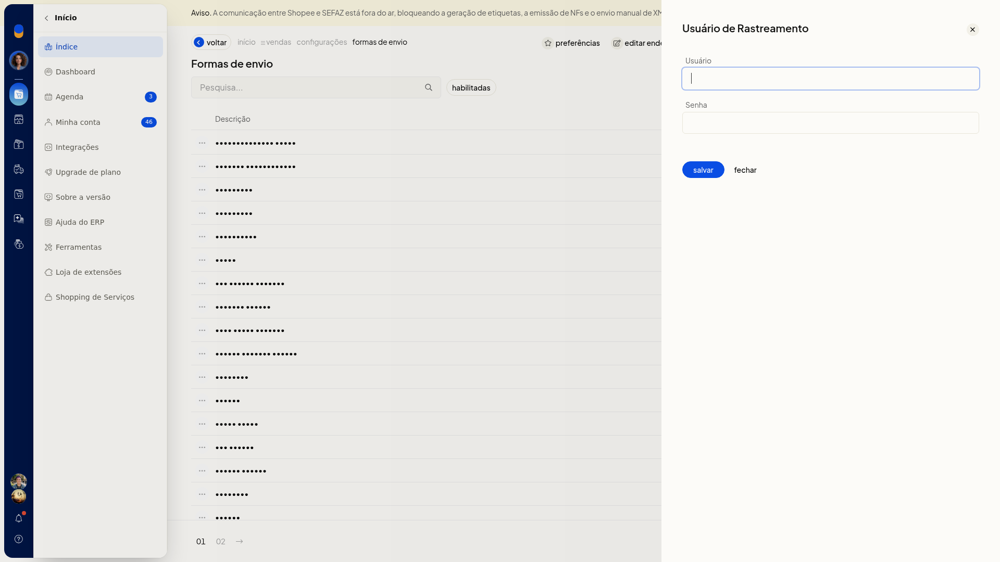

Configurar o usuário de rastreamento das formas de envio
Nas formas de envio, você informa as credenciais de rastreamento da loja. O ajuste fica em Formas de envio, no painel Usuário de Rastreamento.
Pré-requisitos
- Se Formas de envio não aparecer, peça acesso ao administrador da conta.
Importante
- Fechar encerra o painel sem gravar.
Instruções
-
Acesse Configurações > Configurações ERP > Vendas > Formas de envio.
-
Clique em Editar usuário de rastreamento.

-
Preencha Usuário e Senha. Os dois campos não são obrigatórios.

-
Clique em Salvar. As credenciais ficam prontas para gravação.